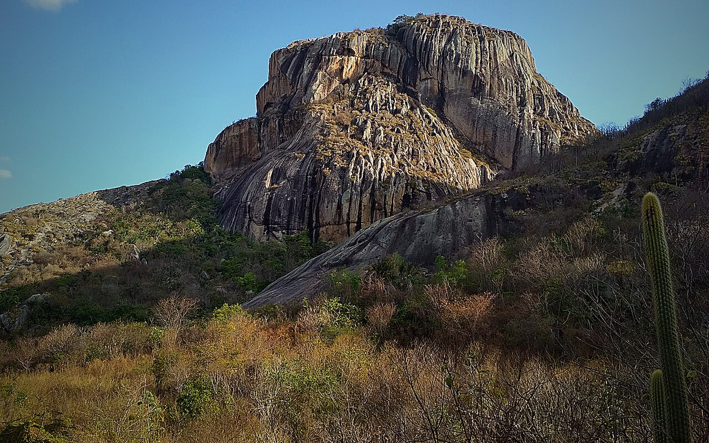
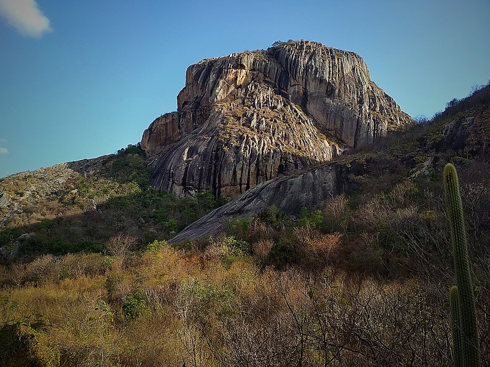

01
Fonte histórica vira experiência
O aluno analisa uma fonte material de verdade: o que a gravura permite afirmar, o que só permite supor.
Centenas de gravuras milenares que ninguém decifrou até hoje — e a turma diante delas, aprendendo como a ciência trata um mistério de verdade.


A escola apresenta a saída com clareza: onde a turma vai, quanto tempo dura, o que está incluso e qual aprendizagem justifica a experiência.
Sobre um lajedo de gnaisse no agreste paraibano, centenas de gravuras em baixo-relevo cobrem 250 m² de painéis: as Itacoatiaras do Ingá, tombadas pelo IPHAN. Ninguém sabe ao certo quem as fez nem o que significam — e é exatamente isso que a expedição ensina: como o conhecimento histórico e científico é construído diante do que não se sabe.
Resultado antes de atividade: o professor ainda consegue referenciar essa expedição no trimestre seguinte.
O aluno analisa uma fonte material de verdade: o que a gravura permite afirmar, o que só permite supor.
A turma aprende por que "foram aliens" não se sustenta — e como a arqueologia descarta e refina hipóteses.
Tombamento, conservação e o que cada visitante deve (e não deve) fazer num sítio arqueológico.
Cada parada tem intenção pedagógica, mediação em campo e conexão com o conteúdo trabalhado em sala.
Fósseis da megafauna e utensílios líticos: o contexto de quem viveu ali antes de qualquer escrita, apresentado antes do campo.
Com condutores locais, a turma percorre as itacoatiaras: observação, comparação de figuras e hipóteses testadas contra o que está gravado.
Cada grupo escolhe um painel e o registra por desenho no diário de campo — a pedra não se toca. Almoço na sequência.
Cada grupo defende ou derruba uma hipótese com o que viu. A turma volta sem a resposta — e com a experiência de pensar como arqueólogo.
A promessa pedagógica vem acompanhada de operação, segurança e comunicação para as famílias.
Temas do roteiro e habilidades que podem ser mobilizadas antes, durante e depois da aula de campo.
Identificar a gênese da produção do saber histórico e analisar o significado das fontes que originaram formas de registro.
Pesquisar, apreciar e analisar formas distintas das artes visuais em diferentes matrizes estéticas e culturais.
Em 30 minutos a Azimute entende suas turmas, ajusta o roteiro e entrega o argumento pedagógico para apresentar à coordenação e às famílias.